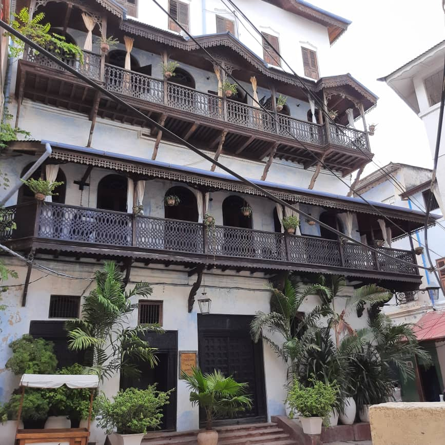
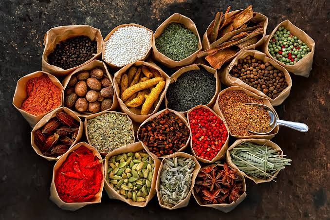

May 5, 2026
10 Secrets of Stone Town – A Local’s Guide
Beyond the tourist path: hidden courtyards, the oldest spice shop, and the best rooftop for sunset views...
Read full story →Stories, guides, and insider tips from our team on the Spice Island.

Beyond the tourist path: hidden courtyards, the oldest spice shop, and the best rooftop for sunset views...
Read full story →
From vanilla vines to cinnamon trees – why a spice farm visit should be on every traveller’s list...
Read full story →A short boat ride from Stone Town takes you to a sanctuary of giant tortoises and a haunting past...
Read full story →